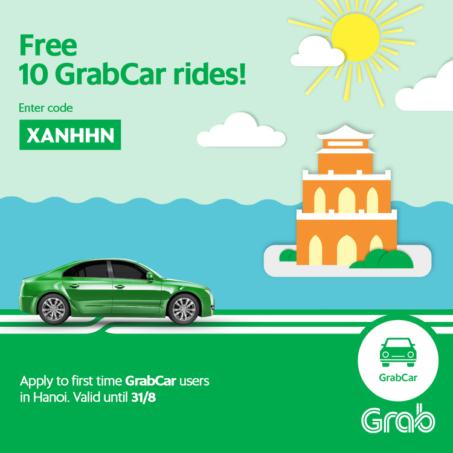
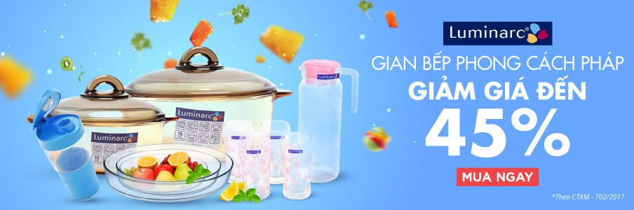
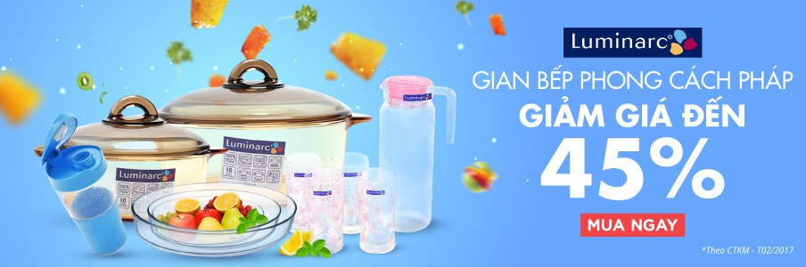

Graphic Design works
Sharepoint web design for Nozomi Networks
My role was to redesign and rebuild company internal websites. Working directly with HR leadership, I collected ideas and requirements
to create designs and implement them in SharePoint.
The goal of the project was to create Sharepoint sites
that contain useful information and resources for employees. The web design must align with company brand guidelines
and is easy to navigate and maintain.
The sites received excited and positive feedback once completed with traffic drastically increasing. Many other department leadership was also interested and driven in using Sharepoint as their information channel.
Tools: Figma and Photoshop

Graphic design for Grab
At Grab, I was an in-house graphic designer. I worked under an art director and communicated directly with Marketing and the Product team to design digital and print graphic assets for promotional campaigns and in-house use.
The goal of the designs is to create cheerful but concise graphic works that catch customers' attention.
It is important to follow company brand guidelines to create fun and energetic works that reflect company culture and is cohesive with the overall branding and messaging. Finalized designs are resized to fit across multiple social media platforms.
Tools: Illustrator, Photoshop, and After Effects




Graphic design for Tiki
I was a graphic designer at Tiki. My role was to produce compelling visual designs and landing pages with high quality product images in a timely manner. Speed in creating new, effective, and efficient designs was required to reflect the ever changing needs of customers in an e-commerce environment.
Tools: Illustrator and Photoshop
 



The working process includes: